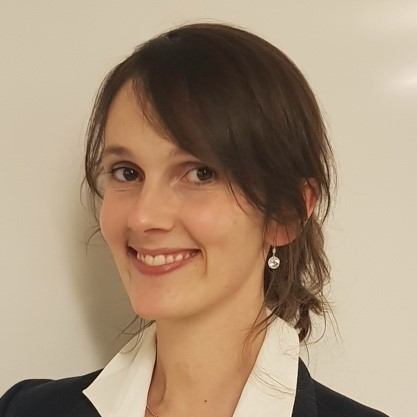
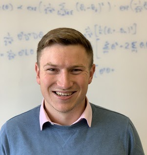
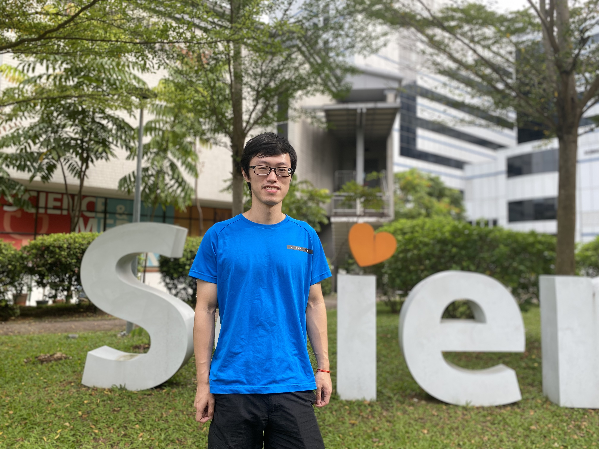

j-ISBA Peer Mentoring Scheme
“Researchers supporting other researchers”
Peer mentoring
Welcome to the j-ISBA Peer Mentoring Scheme. Peer mentoring is an opportunity for you to be paired online with another young researcher in the field, providing a friendly and secure environment where to seek support and guidance.
Peer mentors are j-ISBA members who have volunteered to join the scheme. Based on their experiences, they will be able to offer you advice on how to navigate the uncertainties and difficulties that may arise during your early years in research.
The j-ISBA Peer Mentoring Scheme is meant to provide advice on academic matters, such asAccessing peer mentoring is extremely simple! Just look through the list of available peer mentors for the one that may best match your needs, and contact them via email. After being paired with your peer mentor, you will then be able to schedule a first virtual meeting.
If you would like to volunteer as a peer-mentor, you can contanct j-ISBA at jisba.section@gmail.com.
Peer-mentors
Alejandra Avalos Pacheco

Current position: Assistant professor (tenure track), JKU Linz, Austria
Degree: PhD in Statistics, University of Warwick (in collaboration with the University of Oxford)
Ph.D. Supervisor: Prof. David Rossell and Prof. Richard Savage
Research Areas: applied statistical modelling in the Social Sciences and Biomedicine, high-dimensional inference, heterogenous-data integration, computational strategies, dimensionality reduction, graphical models, clinical trials
Email: alejandra.avalos_pacheco@jku.at
Webpage: Link
Marta Catalano

Current position: Assistant Professor, Luiss University in Rome
Degree: Ph.D. in Statistics, Bocconi University
Ph.D. Supervisor: Prof. Antonio Lijoi and Prof. Igor Prünster
Research Areas: Bayesian Nonparametrics
Email: mcatalano@luiss.it
Webpage: Link
Jack Jewson

Current position: Senior Lecturer, Department of Economics and Business Statistics, Monash University, Australia
Degree: University of Warwick, Department of Statistics, UK
Ph.D. Supervisor: Jim Q. Smith (Warwick) and Chris Holmes (Oxford)
Research Areas: Generalised Bayesian Updating, Robustness, and Variable and Model Selection
Email: Jack.jewson@monash.edu
Webpage: Link
Samuel Livingstone
Current position: Associate professor, Statistical Science, University College London (UCL)
Degree: PhD Statistics, UCL (2016)
Ph.D. Supervisor: Prof. Mark Girolami and Prof. Alex Beskos
Research Areas: MCMC, Markov chains, Bayesian computation, Bayesian modelling in health applications
Email: samuel.livingstone@ucl.ac.uk
Webpage: Link
Sally Paganin
Current position:Assistant Professor (The Ohio State University)
Degree: Ph.D. in Statistical Sciences, University of Padua
Ph.D. Supervisor: Prof. Bruno Scarpa and Prof. Amy Herring (co-Supervisor)
Research Areas: Bayesian nonparametrics, latent variables models, Bayesian computational methods and software
Email: paganin.1@osu.edu
Webpage: Link
Tommaso Rigon
Current position: Assistant Professor of Statistical Science, University of Milano-Bicocca
Degree: Ph.D. in Statistics, Bocconi University
Ph.D. Supervisor: Prof. Igor Prünster and Prof. Antonio Lijoi
Research Areas: applied Bayesian modeling; Bayesian clustering; Bayesian nonparametrics; computational statistics; generalized Bayes; functional data analysis; mixture models; species sampling models.
Email: tommaso.rigon@unimib.it
Webpage: Link
Massimiliano Russo

Current position: Assistant Professor
Degree: PhD in Statistical Sciences
Ph.D. Supervisor: Bruno Scarpa
Research Areas: Bayesian statistics, computational statistics, pharmacoepidemiology
Email: russo.325@osu.edu
Webpage: Link
Louis Sharrock
Current position: Senior Postdoctoral Research Associate, Lancaster University
Degree: PhD in Statistics, Imperial College London
Ph.D. Supervisor: Dr Nikolas Kantas
Research Areas: Monte Carlo Methods, Stochastic Processes, Interacting Particle Systems, Simulation-Based Inference, Wasserstein Gradient Flows, Statistical Machine Learning
Email: l.sharrock@lancaster.ac.uk
Webpage: Link
Nikola Surjanovic
Current position: PhD Candidate, University of British Columbia
Ph.D. Supervisor: Prof. Alexandre Bouchard-Côté and Prof. Trevor Campbell
Research Areas: Scalable Bayesian inference and machine learning
Email: nikola.surjanovic@stat.ubc.ca
Webpage: Link
Yichen Zhu

Current position: Assistant Professor, the University of Hong Kong
Ph.D. Supervisor: Prof. David B. Dunson
Research Areas: Bayesian statistics, computational statistics, deep learning, nonparametric statistics
Email: yczhu@hku.hk
Webpage: Link